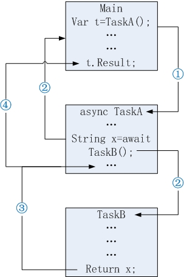

浅谈Task
TAP(Task-based async pattern) 基于任务的异步编程模型
概念
- thread创建的线程，默认是前台线程。必须等待thread线程任务执行完毕之后，主线程才得以退出。令
isBackground=false将创建后台线程。主线程不需要等待后台线程执行完毕就会直接退出。 - 使用Task创建的线程，默认就是后台线程。并且Task的线程是基于ThreadPool线程池的，相对于直接new Thread来说，Task创建的线程系统开销低效率较高。若想等Task线程执行完毕，主线程才能结束，可以使用Task.Wait()来等待线程调用完毕。
async/await
示例：
static void Main(string[] args)
{
Task<string> taskA=TaskA();
//Task taskA=TaskA();//这种写法，相当于强制类型转换Task<string>到Task
Console.WriteLine("main doing something.");
Console.WriteLine("task result is:" + taskA.Result);
Console.ReadKey();
}
static async Task<string> TaskA()
{
Console.WriteLine("TaskA started.");
string result = await TaskB();
Console.WriteLine("TaskA ended.");
return result;
}
static Task<string> TaskB()
{
return Task.Run(() => {
Thread.Sleep(3000);//模拟耗时操作
return "TaskB";
});
}
总结：
async关键字标识的方法,当我们在main函数里面对其进行调用时,可以看出taskA变量代表的是TaskA(异步方法)本身。而并不是TaskA里面返回的TaskB的执行结果result这个变量。- 整个调用流程为
>>> main
>>> TaskA
>>> TaskA挂起
>>> 返回到main(并同时执行TaskB)
>>> main执行完毕(等待taskA.Result)
>>> TaskB执行完毕
>>> 返回到TaskA的await的下一条语句return result
>>> taskA.Result=result
>>> main函数退出
- 透过
async和await关键字，轻松的把TaskA方法拆开成了2个部分，await的上半部分和await的下半部分。“异步方法"下半部分相当于上半部分的回调函数。在上半部分处理完毕之后，继续处理下半部分的操作，并将结果返回给main。
